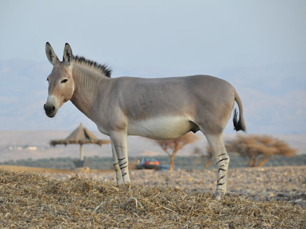

No final do Pleistoceno, Equus hemionus floresceu até o leste da Alemanha Ocidental. Atualmente, pelo menos uma subespécie foi encontrada na Rússia, China, Irã e Índia. No entanto, a maior população (mais da metade do número total) de E. hemionus é encontrada no sul da Mongólia.
E. hemionus prefere o país plano. Pasta e repousa principalmente em terras altas ou planícies desérticas, semideserto ou estepe. Eles nunca são encontrados a mais de 30 km de um oásis permanente ou nascente.
A cor do burro selvagem asiático varia dependendo da distribuição e da estação. Como regra geral, eles são marrom avermelhado no verão e clarear a marrom amarelado no inverno. A parte inferior dos animais é branca ou bufante. Estes jumentos são caracterizados por uma faixa preta grossa com bordas brancas que percorre o meio de suas costas. Eles também têm pés pequenos e pernas curtas. Os indivíduos podem ter 1-1,4 m de altura nos ombros.
| Outros Equinos | ||||
|---|---|---|---|---|
|  |
|
|
|
|
| Equus Africanus | Equus Ferus | Equus Grevyi | Equus Kiang | |